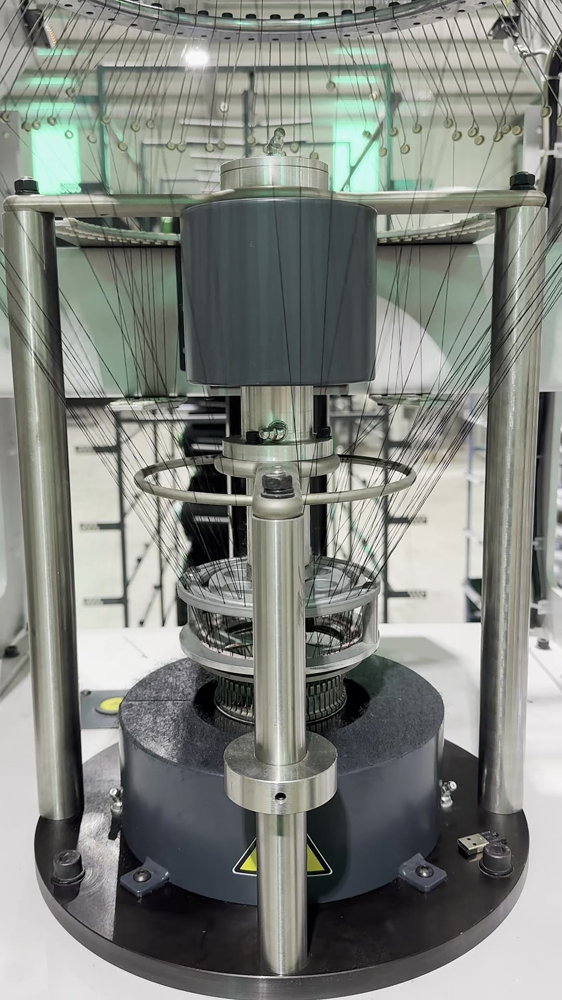
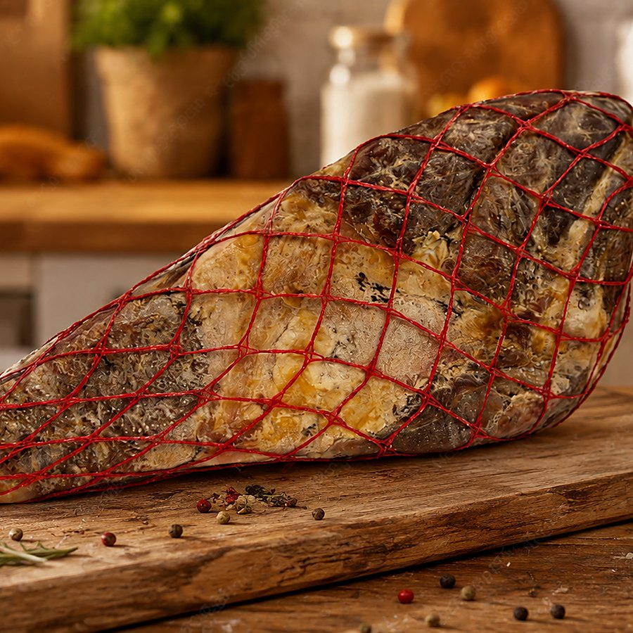
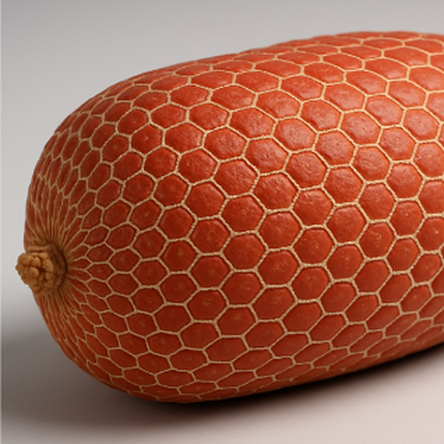
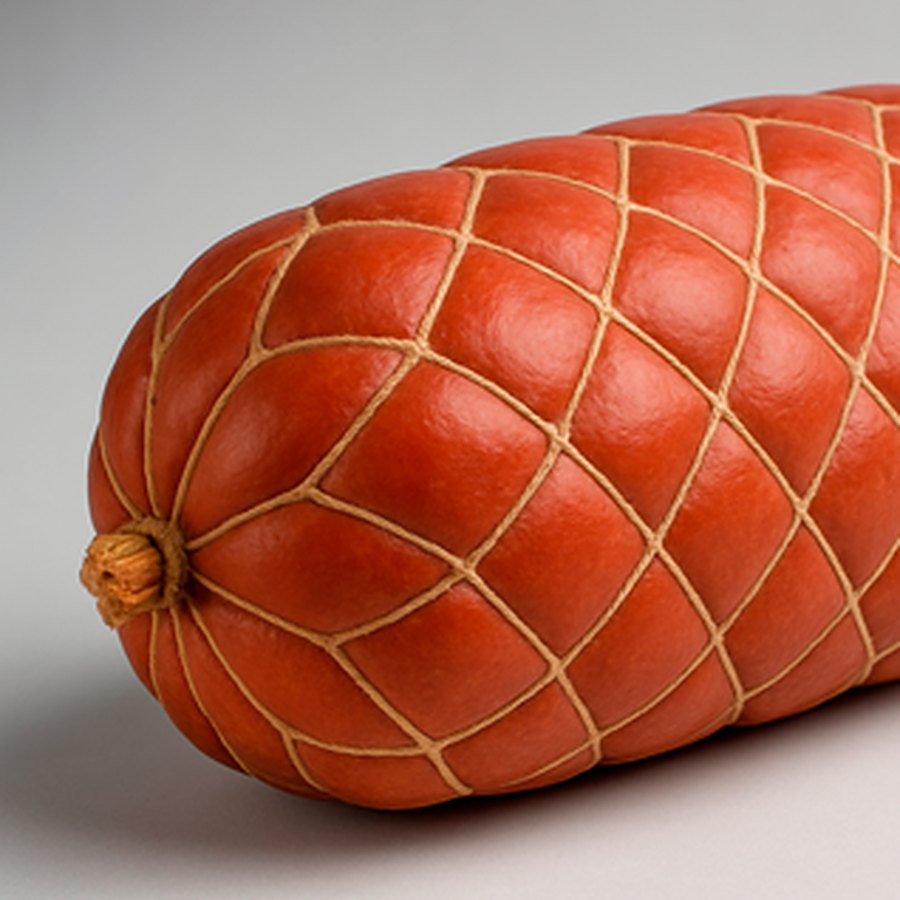
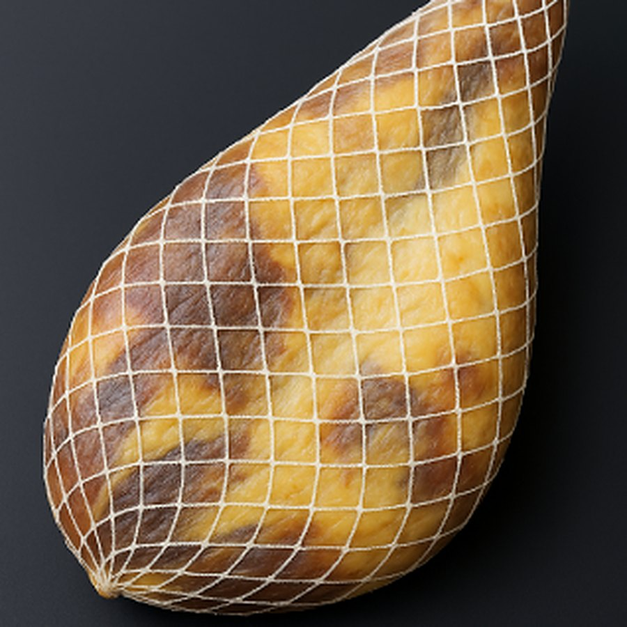

Redes sin elastizar para jamón, mortadela y salame Milán
Malla tejida en rombo o hexágono, sin hilo elástico, para piezas que necesitan contención y un marcado parejo sin compresión. Tamaño de cuadro ajustable y rollos de 100 metros.

- 60 cuadrosrombo o hexágono
- Rollos de 100 mpara jamón
- Cuadro ajustablea medida para cada pieza
- Enets®tejida en nuestra planta
Así queda
Piezas terminadas con nuestros insumos





Para qué piezas
Para bondiola, lomo, panceta y bresaola conviene una red elástica, que acompaña la merma del curado.
- Jamón: red de 60 cuadros, modelos Jamón 40 y Jamón 60 según el ancho de la pieza
- Mortadela y salame Milán: red sin elastizar a medida, con el tamaño de cuadro que pida tu proceso
- Cortes kosher de cuadro ancho: ver redes kosher
Medidas
| Red | Ancho plano (cm) | Ancho máximo (cm) | Cuadros |
|---|---|---|---|
| Jamón 40 | 3 | 40 | 60 |
| Jamón 60 | 3 | 60 | 60 |
Preguntas frecuentes
¿Cuándo conviene una red sin elastizar en vez de una elástica?
Cuando la pieza no reduce su diámetro de forma importante durante el proceso, como el jamón cocido o la mortadela, y se busca contención y marcado parejo sin compresión.
¿Rombo o hexágono?
Son dos dibujos de malla. Cambian el marcado sobre la pieza; la contención es equivalente. Te mandamos muestras de las dos.
¿Se puede ajustar el tamaño del cuadro?
Sí, en las redes sin elastizar el cuadro se ajusta a medida.